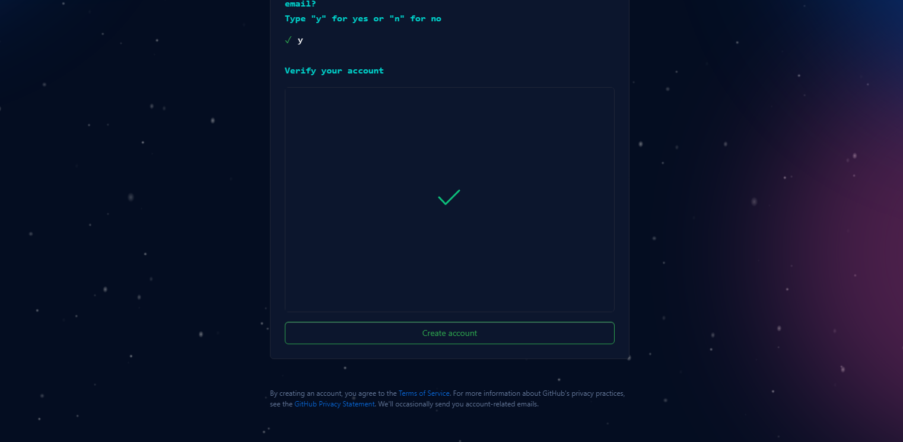
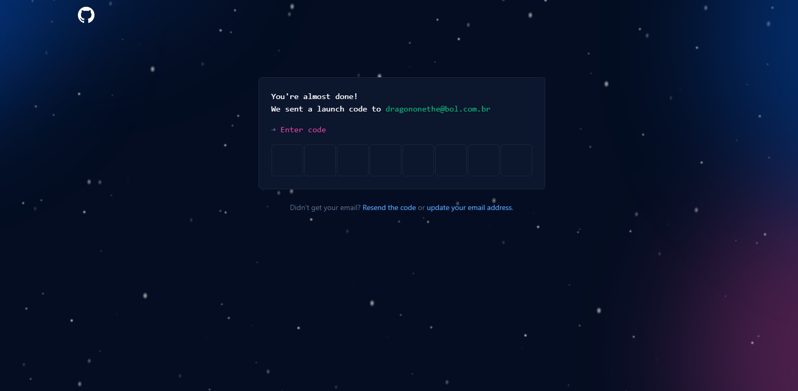
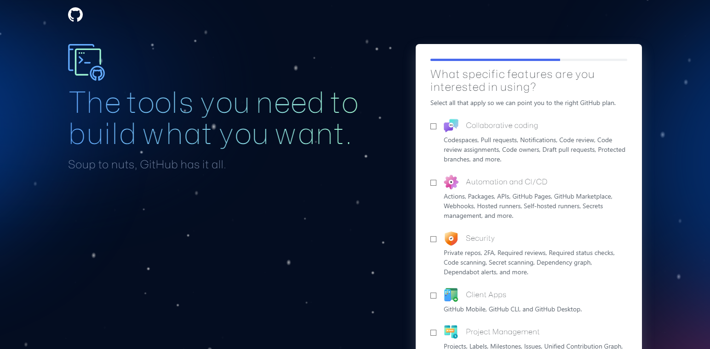
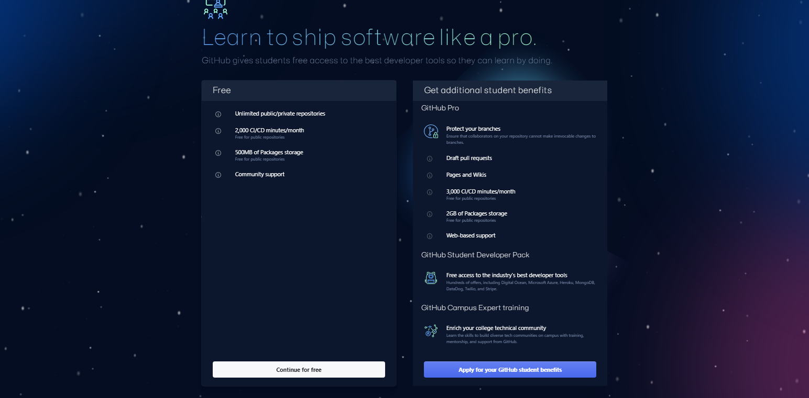

Como criar uma conta no git hub
Como criar uma conta no site do GitHub?
Siga o passo a passo abaixo e comece a contribuir ainda hoje!
Primeiramente acesse o site do GitHub (https://github.com/), e procure o botão "sign up".

Preencha o formulário com as informações cadastrais que estarão sendo requeridas (Email, senha e nome de usuário)

Escreva a letra "Y" para aceitar ir para a próxima etapa

Faça a verificação ("Não sou um robô")

Verifique a caixa de entrada do email que usou para criar a conta, leia o código que foi enviado e digite para validar

Escolha quantos projetos pretende fazer e se você é estudante ou professor
Selecione os tipos de projetos que você pretende criar

Escolha o plano que irá usar (Pago ou gratuito, recomendo que use o gratuito caso você seja estudante)
